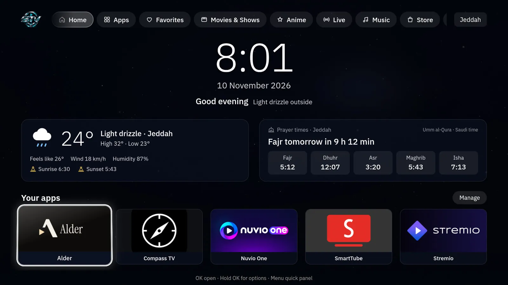
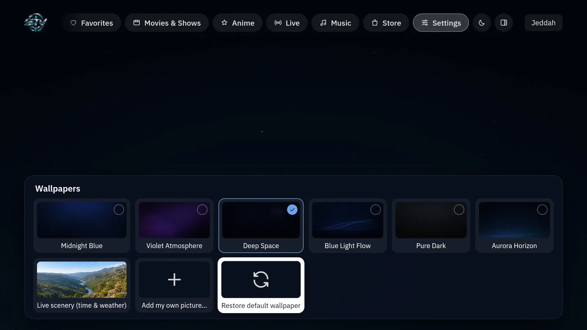

Home
Clock, date and greeting, weather and prayer times, and the five apps you use most
Android TV launcher · Formerly Solitary TV
Your TV. Your Space.
A calm, cinematic home screen for Android TV. Your apps, categories, wallpapers and screensavers, all in one place and all on the remote

Real screenshots from STV running on an Android TV box. Move with the remote, press OK, and you are there
Clock, date and greeting, weather and prayer times, and the five apps you use most
Movies & Shows, Anime, Live and Music, plus your own. Rename, hide, reorder and sort
Dark built-in wallpapers, a live scenery mode that follows the weather, or your own photo
Starts when the TV is idle, with the time, date, weather and next prayer on a calm background
Choose the Arabic and English fonts separately, with a live preview
Four original sound styles and three levels that never stack when you hold a button
Switch instantly. The whole interface mirrors to right-to-left for Arabic
D-pad, OK and Back everywhere. The Menu button opens a quick panel with the controls you need
Save your setup on the TV or export it to a file, then restore it any time
Every gallery previews the change as you move, OK keeps it and Back cancels

Recorded on an Android TV box running STV 1.5.1
SHA-256289ff5530769db8f9c68b776d347a8c56edd1dd655ee0b97c65dd4a740ade815
Tested on an Android 12 TV box. Weather and prayer times are set to Jeddah in this version
On the TV, allow your file manager or downloader app to install unknown apps. The setting is usually under Apps → Special app access
Download STV-v1.5.1-AndroidTV.apk on the TV, or copy it to the TV's Download folder
Open the file and choose Install. STV shows up in your apps as Solitary TV for now
In STV go to Settings → System & general → Choose the default Home app. You can switch back the same way at any time
No Home option on your device? Set it from a computer with ADB
adb shell cmd package set-home-activity tv.customhome.launcher/.MainActivityYes. STV is free and open source under the MIT License, with no ads and no account
No. It is a normal Android app. It does not disable or remove anything on your TV
Yes. Pick a built-in wallpaper, the live scenery mode, or import your own picture
Yes. Create, rename, hide and reorder categories, and choose which apps go in each one
Yes. The whole interface is available in Arabic and English with a proper right-to-left layout and Arabic fonts
In version 1.5.1 weather and prayer times are set to Jeddah, Saudi Arabia. A city picker is not available yet; developers can change the city in the source and build their own copy
Install the new APK over the current one. Your settings stay. Do not uninstall first
Choose it again as the default Home app in Android settings, or uninstall STV
STV needs Android TV or Google TV with Android 8.0 or newer. It has been tested on one Android 12 box, so try it as a normal app before making it your Home screen
Report a bug or ask a question on GitHub, or support the project to keep it growing